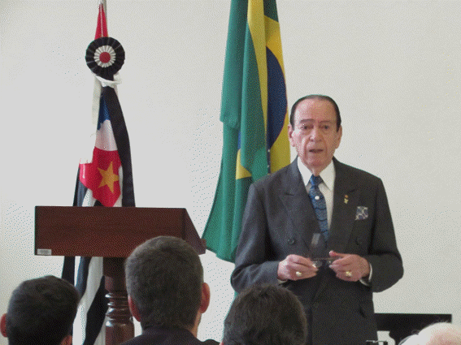
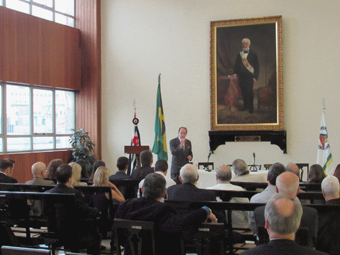
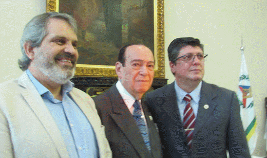

Design promocional do evento, publicado nas redes sociais da Internet.
Os primeiros momentos da República no Brasil
Por: Henry N. Díaz M.
11 de novembro de 2019
São Paulo - SP.
República Federativa do Brasil
Fotos: Henry Díaz
Para: diariomasonico.com
A Benemérita Loja Capitular Piratininga de São Paulo, conhecida como “A FIDELÍSSIMA”, fundada em 28 de agosto de 1850, e idealizada por Luís Alves de Lima e Silva, Duque de Caxias, que como Grão-Mestre do Grande Oriente do Brasil, fiz entrega da sua carta patente; com motivo para celebrar os 60 anos de vida maçônica de Joaquim da Silva Pires, mestre maçom de grau 33 do REAA, quem iniciou sua vida maçônica em 11 de dezembro de 1959, é membro honorário da Benemérita Loja Capitular Piratininga, é Orador emérito da a Augusta e a Respeitável Loja Estela do Sinai, na chamada Cúpula Maçônica do Estado de São Paulo, foi Secretário de Relações Internas dos Assuntos Jurídicos, Secretário de Ritualística, Secretário de Cultura e Juiz Presidente do Tribunal de Justiça Maçônico, fundador e primeiro presidente do Instituto Cultural Ordem e Progresso, também é historiador maçônico e ritualístico, escritor de oito livros sobre maçonaria e, seu próximo, sobre a história do Brasil, será focada no período conhecido como “República Velha” (1889 a 1930), que está em processo de escrita, e espera-se que seja disponibilizado ao público em junho de 2020 (não há muito o que esperar), escreva para a Revista Maçônica Trolha de edição mensal e A Estela, é advogado em Direito Civil e é portador da Comenda de Mérito da Ordem Dom Pedro I., uma ou a maior distinção do Grande Oriente do Brasil (GOB); ofereceu esta palestra pública ao irmão Joaquim, sendo ele mesmo, Orador de Ordem designado para expor de maneira geral e magistral, Os Primeiros Momentos da República no Brasil, oratória realizada na sede da Benemérita Loja, com a presença de dedicados Maçons e distinguidas amizades que se reuniram para saber o que seria exposto, sobre esses momentos da história deste grande país e que hoje e prudente ter presente.
Como a grande maioria dos países do continente americano, o Brasil, também é criado com base em um sistema filosófico e político chamado a República, em alguns países, produziu guerras muito fortes, que dizimaram sua população e destruíram suas economias, no Brasil aconteceu de outro modo. Aqui os eventos aconteceram de maneira menos violenta, foram mais pensados e negociados, ou foi simplesmente o produto de uma cadeia de eventos que se sucederam um após o outro, da mão dos homens e mulheres que tiveram algo a ver em cada um deles, próprio de sua cultura, das formas e jeitos de proceder, das maneiras de pensar e ser.

Esta foi a exposição, detalhes, personagens, momentos, pontualidade dos fatos, palavras utilizadas, em documentos que, com o tempo, podem ser unidos e estudados, até então, eram cartas enviadas com diferentes direções, para diferentes pessoas; onde eles expõem pensamentos íntimos, onde sentimentos profundos são expressos aos personagens que são hoje em dia, motivo de estudo e admiração; com conceitos que desde então conformam os valores que ainda são levados em consideração e preservados, como esses de pátria, lealdade, honra, etc. Finalmente, o honrado Orador nos conduziu a alguns eventos particulares, bem como aos generais, que de uma maneira interessante, foram unidos ou tecidos com a delicadeza da mente que quer entender o que aconteceu e assim, poder conhecer a verdade, que como sempre, mostra-se aos olhos de quem a procura.
Não devo entrar em detalhes a pedido do orador, pela causa do livro que está sendo feito, devo manter minha palavra de ser cuidadoso, por isso sugiro esperar por esse livro para que, com sua leitura, tenhamos acesso a esses detalhes para enriquecer muito mais os conhecimentos sobre a história da república no Brasil, mas vou a refletir sobre o tema, o conceito república e sua relação com o conceito de monarquia, já que acho que no Brasil ocorreu uma relação muito importante em ambos sistemas e espero gerar assim, uma sana discussão.
Sou daqueles que consideram que o Brasil tem uma data específica na proclamação da república, na sexta-feira, 15 de novembro de 1889, “do marechal Manuel Deodoro de Fonseca, que demitiu o imperador e assumiu o poder no país, estabelecendo uma República Federal Presidencial e terminando com o sistema monarquista parlamentar do Império do Brasil, que encerrou o reinado de Dom Pedro II” (citação na Wikipédia), os dois personagens eram maçons, mas uma proclamação realmente implica uma fundação, neste caso de um sistema político?.

Sendo uma monarquia constitucional, havia total respeito pelas liberdades e direitos dos cidadãos.
O governo parlamentar, ou seja, um órgão legislativo composto por representantes eleitos pelo povo, foi respeitado.
Ele chamou conselheiros do governo políticos proeminentes e outros homens de grande figura para sua preparação e honestidade, como Pedro de Araújo, Paulino de Souza, Visconde de Rio Branco e General Caxias, e o Brasil tornou-se, assim, uma república coroada e não um império.
Ele decretou a emancipação dos escravos negros, ao promover a imigração européia, para compensar a falta desses braceiros libertados.
Modernizou a exploração da riqueza açucareira, introduzindo as máquinas mais avançadas e as técnicas de cultivo mais eficazes; da mesma forma, ele decretou a navegação livre no rio Amazonas para todos os navios do mundo, contribuindo com ele para o desenvolvimento de suas áreas fluviais; da mesma forma, a exploração da borracha se intensificou.
Introduziu o telefone, de invenção recente, criou o Instituto Pasteur para combater a hidrofobia; ao mesmo tempo, ele também construiu observatórios astronômicos modernos, bem como inúmeras linhas ferroviárias.
Todos esses fatos, intimamente ligados à filosofia maçônica a qual está intimamente ligada à filosofia republicana, denotam que a relação entre a república e a monarquia parlamentar é uma realidade, e parece-me que é demonstrativo, talvez o primeiro no mundo, como esta monarquia mostrou que pode viver com a república, que a alegada aversão entre monarquia e república não é verdadeira, que se algo é rejeitado, é apenas o abuso de poder que um ou outro pode exercer sobre a população, somente isso, mas a república e a monarquia podem conviver, podem coexistir, gerar e produzir os resultados mais benéficos para a sociedade, onde é estabelecida, fundada, exercitada e proclamada.
Continuo com a citação: “… Apesar das grandes obras que Pedro II realizou, após seu longo reinado, … o marechal Deodoro da Fonseca liderou a Revolução de 1889, a mesma que triunfante ignorou o soberano Pedro II, quem não ofereceu resistência, depois embarcou para Portugal. Pela Constituição de 1891, o Brasil foi constituído na República Democrática Federativa, com a denominação de Confederação dos Estados Unidos do Brasil, integrada por 21 estados e uma capital federal, a cidade do Rio de Janeiro ... O Brasil experimentaria um desenvolvimento formidável no século XX”. Fim da cita.
O Orador esclarece que o
Imperador não seria demitido, isso ocorre por causa dos imponderáveis, e
que o prazo que lhe foi concedido não foi cumprido, tendo que embarcar no dia 16
de madrugada, onde um resultado fatal quase ocorre devido às condições que o mar
tinha no momento. Durante a exposição, foram divulgados detalhes, que espero não
faltar a palavra dada ao mencionar aqui, de maneira superficial alguns coisas,
como que o desejo real de Fonseca era pedir ao Imperador que dissolvesse o
Ministério presidido por um “autoritário e aristocrata”, Afonso Celso de Assis
Figueiredo, Visconde de Ouro Preto, advogado e político brasileiro que liderou o
último gabinete ministerial no escritório do Império do Brasil em 1889; que ele,
Deodoro da Fonseca, considerava hostil às forças armadas do exército, e que por
essas fofoqueiras de nomeações de personagens não afetos, em níveis pessoais,
eles produziam decisões baseadas em supostos acordos e ordens dadas, que não
eram verdadeiras, além da inclusão da palavra Republica, por quem levou o
documento para sua assinatura, provavelmente, por essa idéia de tomar vantagem
das oportunidades que alguns não hesitam em aproveitar para si mesmos e, dessa
forma, acreditar que alcançaram um sucesso em suas vidas, objetivos
particulares, analisando ou não, os efeitos que isso produziria a favor ou
contra, de uma sociedade inteira, de um povo, de um país e do mesmo mundo, em
uma proclamação que não contemplava o uso dessa palavra, pois objetivo inicial
era só pedir ao Imperador a dissolução desse Ministério e propor nomes dos novos
membros, o resultado foi a caída do império e o nascimento de uma república que
ainda hoje, segundo meu critério, não termina de ser uma como deve ser uma
república. 
Em resumo, nos primeiros momentos da república no Brasil, pode-se dizer que eles são um encontro de fatos e interesses particulares que se cruzaram, produzindo um resultado diferente do que era originalmente desejado e que, uma vez produzidos esses encontros, não posso ser evitado a continuação de outros e para gerar uma paz que traga benefícios ao senso comum da maioria, ou seja, que o Brasil fosse favorecido por tudo o que estava acontecendo em questão de poucos dias, principalmente de um dia para o outro, aconteceu o que aconteceu, a sana relação entre a monarquia e a república foi dissolvida, separada uma da outra, iniciou uma nova história, poderão juntar-se outra vez?.
Foram 40 minutos curtos, onde "conduzido pela mesma força, trilhando o mesmo caminho, caminho do amor para a história de nosso país, protegido por escudos indobráveis, sob a inspiração do amor à nossa bandeira que é o amor temperado pelo Brasil", foi possível aprender mais e melhor a história de um grande país que faz parte de todos, dado o laço indissolúvel que as repúblicas do mundo mantêm entre si, são laços de sangue, de mente e coração, de nobres maçons que ao longo da história forjaram as repúblicas que hoje sobrevivem em um mundo que quer ser dominado pelas paixões e os vícios daqueles que insistem em destruir o que deve ser preservado, protegido e cuidado pela força dos corações e da mesma espada que defende a Estado de direito que serve a humanidade e trabalha para a glória do Supremo Criador.
_______________________________________________________